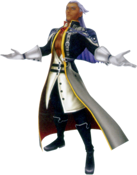

Kingdom Hearts: Characters
Protagonists
Sora
Sora is the heart and soul of the Kingdom Hearts series, a kind-hearted and courageous boy from Destiny Islands. Chosen by the Keyblade to combat the forces of darkness, Sora embarks on a grand journey across worlds to protect the light and save his friends. His unwavering optimism and strong sense of justice make him a natural hero, though he often struggles with self-doubt and the weight of responsibility. Throughout the series, Sora’s character grows as he learns about the balance between light and dark.
Riku

Riku is Sora’s best friend and a central figure in the series, known for his calm demeanor and deep, introspective personality. While initially tempted by the allure of darkness, Riku’s journey is one of redemption and self-discovery. He learns to wield both light and dark, embracing his imperfections and ultimately earning the title of Keyblade Master. Riku's protective nature and willingness to make sacrifices for his friends underscore his growth from a conflicted rival to a mature, heroic figure.
Kairi
Kairi is the third member of the Destiny Islands trio and serves as a beacon of hope and light throughout the series. Though initially portrayed as the damsel in distress, Kairi’s role evolves as she trains to become a Keyblade wielder herself. Her kindness and inner strength are a source of inspiration for Sora and Riku, driving their determination to protect her and restore peace. Kairi represents the bond that ties the trio together, even when separated across worlds.
Antagonists
Xehanort
Xehanort is the primary antagonist of the Kingdom Hearts saga, a master manipulator obsessed with understanding and controlling the balance of light and dark. His plans to forge the χ-blade and unlock Kingdom Hearts span generations, with his influence spreading through his numerous incarnations, including Ansem (Seeker of Darkness) and Xemnas. Xehanort’s calculated demeanor and twisted ambition make him a complex and formidable foe, embodying the series' central theme of the eternal struggle between light and darkness.
Ansem, Seeker of Darkness
Ansem is the Heartless form of Xehanort and serves as the main villain in the original Kingdom Hearts. He embodies pure darkness, seeking to open the Door to Darkness and consume the worlds. Charismatic and menacing, Ansem’s pursuit of power reflects Xehanort's broader ambitions while providing Sora and his friends with their first taste of the dark forces threatening the universe.
Xemnas
Xemnas is the Nobody of Xehanort and the leader of Organization XIII. Cold and emotionless, Xemnas seeks to complete Kingdom Hearts to grant Nobodies the hearts they lack. His enigmatic personality and cryptic speeches reflect his internal conflict, as he denies his own emotions while yearning for purpose. Xemnas serves as the final antagonist of Kingdom Hearts II and a pivotal figure in the larger narrative.
Key Allies
Donald Duck
Donald Duck is the court wizard of Disney Castle and one of Sora’s closest companions. Armed with powerful magic, Donald supports Sora in battle while providing comic relief with his short temper and humorous antics. Despite his grumpy demeanor, Donald deeply cares for his friends and proves himself to be a loyal and dependable ally.
Goofy

Goofy is the captain of the Disney Castle royal guard and another of Sora’s trusted companions. Easygoing and kind-hearted, Goofy contrasts Donald’s fiery personality with his calm and optimistic nature. His unconventional wisdom often surprises his friends, and his unshakable loyalty makes him a cornerstone of Sora’s team.
King Mickey
King Mickey is the wise and heroic ruler of Disney Castle and a Keyblade Master. Although small in stature, Mickey’s bravery and skill make him a formidable warrior in the fight against darkness. He often works in the shadows, aiding Sora and Riku when they need him most, and his presence symbolizes hope and guidance throughout the series.
Other Characters
Aqua
Aqua is one of the protagonists of Kingdom Hearts: Birth by Sleep and a Keyblade Master trained alongside Terra and Ventus. She is a selfless and determined individual who sacrifices her freedom to save her friends and protect the Realm of Light. Aqua’s journey through the Realm of Darkness showcases her unwavering resolve and her critical role in the series' overarching narrative.
Terra
Terra is a Keyblade wielder and one of Aqua’s closest friends. Struggling with the temptation of darkness, Terra’s story is one of tragedy and redemption. His connection to Xehanort leads to devastating consequences, but his loyalty to his friends and belief in their bond remain unshaken, making him a tragic yet heroic figure.
Ventus
Ventus, often called Ven, is the third member of the Birth by Sleep trio and a Keyblade wielder with a mysterious past. Despite his youthful and innocent demeanor, Ven harbors a deep connection to the darkness due to his fractured heart. His struggle to maintain his light serves as a major driving force in his story, and his bond with Aqua and Terra exemplifies the power of friendship.